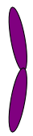
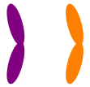
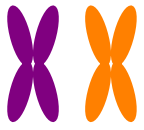

-
The following questions draw upon the Eukarya video lecture and related
suggested reading materials (none required however the Williams et
al. 2013 paper or the one from the Atlantic might be useful). If you
find other readings you’d like to use, please ask me so I can make sure
they are suitable. Do not use direct quotes to answer the questions,
rephrase to put the answers into your own words.
-
What’s so different about eukaryotes that makes it hard to figure out
how they evolved? Why do you think eukaryotes are sometimes referred to
as a chimera?
Some of the features that
are diagnostic for eukaryotes (only possessed by them) are so different
from anything we’ve seen in bacteria or archaea that it’s hard to figure
out how they could have evolved. This would include things like the
nucleus or the endomembrane system. At the same time, there are other
ways that eukaryotes resemble bacteria and yet other ways they resemble
archaea. For example, chloroplasts and mitochondria are very like
certain kinds of bacterial cells and the eukaryotic plasma membrane
resembles that of bacteria. On the similarity to archaea side, we see
that eukaryotic ribosomes are like those of archaean cells and so is the
nuclear DNA replication system.
-
Why do you think scientists at first concluded that each of the three
domains is monophyletic? What evidence led them to that conclusion?
Probably because each of
these groups is so distinct from the others. We haven’t seen anything
that looks intermediate between bacteria and eukarya, for example. And
if we looked at the DNA sequences available to us at the time, they were
different enough between each of these 3 groups to suggest that they are
totally distinct from each other and have been for a long time. Things
like ribosomal DNA sequences are the data used to derive the 3-domains
relationship.
-
What changed and led to the suggestion that there are only 2 domains and
Archaea is not a monophyletic group? Did evidence support this idea?
The key change supporting
the 2-domains relationship comes from the discovery of new species of
archaea that are more genetically similar to eukaryotes than to any
other archaeans. In other words, we’re closer relatives to some
archaeans than to others! In addition, some of these new archaean
species possess genes that are quite similar to genes thought to only be
found in eukaryotes. This evidence suggests that Eukarya is monophyletic
but Archaea is not since Archaea is defined as excluding some of its
descendants: Eukarya. Because “Domain” is supposed to represent kind of
the same level of relationship, it doesn’t make scientific sense to have
Eukarya be a Domain – it is contained within a different Domain:
Archaea.
-
What is a chromosome? What’s it mean for two chromosomes to be
“homologous” versus “non-homologous”? How is an X-chromosome different
from an autosome?
A chromosome is a DNA
molecule encoding the genetic information of an organism, complexed with
proteins. Chromosomes can be linear or circular and they involve not
just the DNA itself but proteins that are interacting with the DNA (in
both bacteria and in eukaryotes). In the organisms that we are familiar
with, chromosomes are typically found double-stranded.
When two chromosomes (or
parts of chromosomes) are homologous, that means we think their DNA
sequence is so similar that they share a common ancestor. In terms of
diploid organisms like us, that means that homologous chromosomes encode
the same genes – we typically get one copy of each somatic chromosome
(or autosome) from each parent. One way to recognize which chromosomes
are homologous is to make a karyotype, staining the chromosomes and
matching them up by their banding patterns. The ones that have the same
pattern are homologous.
Non-homologous chromosomes
are ones that contain different sets of genes from each other. Thus,
they are dissimilar in their DNA sequence. When we talk about humans
having 23 chromosomes, we mean that humans have 23 non-homologous
chromosomes.
Most chromosomes are
autosomes – they are the ones that are not considered “sex” chromosomes.
The X and Y chromosomes (in organisms like humans and flies) are
considered sex chromosomes, as are the Z and W chromosomes in birds. All
organisms have autosomes but not all organisms have sex chromosomes.
(The ‘auto’ means ‘self’ or ‘same’ and refers to the fact that the two
copies of an autosome have the same information. Sex chromosomes
typically share some of their information but also differ from each
other quite a bit.)
-
Draw and describe each of the following structures. What is the ploidy
of each? How many copies of the chromosome are present? (Note: We go
over this exercise in content videos BUT you should be able to complete
it without consulting any references.)
-
one chromatid
This is a haploid situation,
with only one version of a single chromosome.
-
a replicated chromosome
This is a single chromosome
that has been replicated so there are two copies attached at the
centromere. This is a haploid situation but with two copies of the
chromatid (but all info inherited from a single parent). Also known as a
pair of sister chromatids.
-
a pair of homologous chromosomes
This shows two chromatids,
different colors to indicate they were inherited from different parents.
In this image they are single chromatids, not replicated but if they
were replicated that would also be a pair of homologous chromosomes.
This situation is diploid since we have two different copies of the
chromosome. This situation occurs in most of the cells in your body most
of the time (except the chromosomes would not be compressed), the
nucleus is not presently undergoing division.
-
a pair of replicated homologous chromosomes
Here we have the same situation
as in the previous question but now with two copies of each chromatid.
So again we are diploid (one copy from each parent) but we have 4 copies
of the genetic material. This structure would appear in a cell that is
undergoing mitosis or meiosis.-
a pair of sister chromatids
This structure is the same as a
replicated chromosome, sister chromatids is just another term for a
replicated chromosome. They are called sister chromatids because they
are exact duplicates and those duplicates will generally have been
created recently. A cell with this structure will be in the process of
nuclear division, most of the time. (There are some exceptions where a
chromosome creates many copies of itself that stay attached at the
centromere perhaps to greatly increase protein production. Google
“Drosophila salivary gland polytene chromosomes”, for example.)-
two non-homologous chromosomes
Here we have two chromatids
(not replicated) of different sizes though the same color. Different
sizes represents that these chromosomes contain different genes from
each other. The same color signifies that they were inherited from the
same parent. This is a haploid situation but with n = 2 (where all the
other examples had n = 1). We have 1 copy of each of two different
chromosomes, encoding different genes from one another.
-
Within a species, the number of chromosomes is usually fixed, or
constant (i.e., humans have n = 23 different chromosomes, with diploid
cells containing 2 copies of each, 2n = 46). Loss or gain of a single
chromosome frequently (but not always…) causes abnormalities, sometimes
fatal ones, in many organisms. Yet, chromosome numbers vary widely among
species (e.g., yeast has 2n = 32, fruit flies have 2n = 8, carp have 2n
= 104). If losing or gaining chromosomal information is such a problem,
even sometimes fatal, how can we understand how the large variation in
chromosome number among different taxa could have arisen?
There isn’t one specific
answer I’m looking for here… I want you to think about what this could
mean. Is there any reason to expect that chromosome numbers would NOT
vary? Any reason to expect that they SHOULD vary? Below are some of my
thoughts on this. The variation in number of chromosomes probably also
means variation in number (and identity of genes). This variation might
suggest that not all chromosomal information is important or that having
it arranged in certain ways (like a set of genes on the same chromosome)
is not necessarily important. The variation could also suggest that
what’s important changes over time, with environmental conditions. And,
of course, we see that number of chromosomes does not predict organismal
“complexity” (yeast have more than flies!). We’ll think more about this
kind of variation as the semester continues.